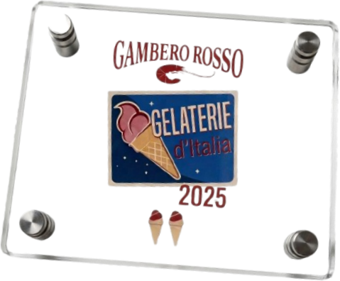
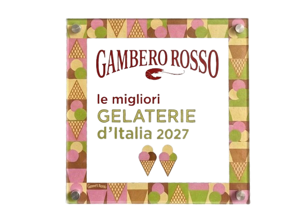
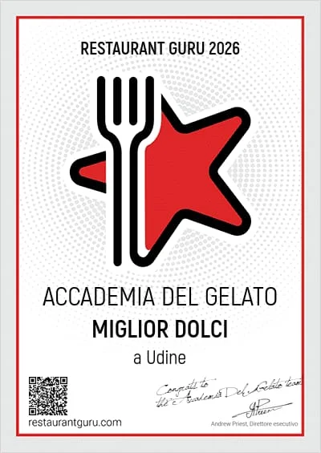
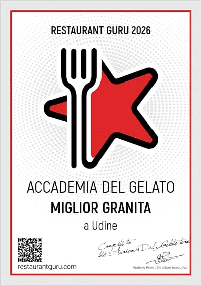
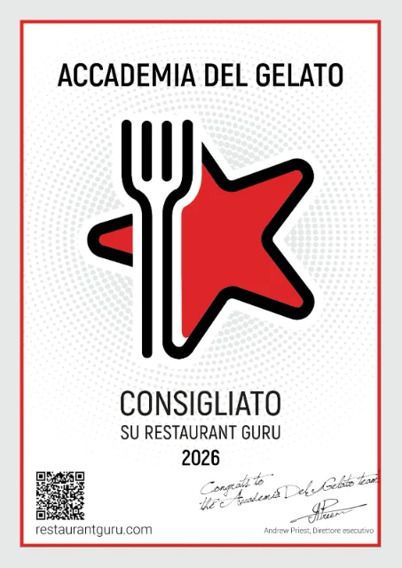

Udine · Dal laboratorio alla coppetta
Udine · From our lab to your cup
Il gelato naturale
italiano
The natural
Italian gelato
Preparato ogni mattina nel nostro laboratorio, con frutta vera e materie prime italiane d'eccellenza. Nessun conservante, nessuna scorciatoia: solo il sapore riconoscibile di un gelato fatto come si faceva una volta.
Made fresh every morning in our lab, with real fruit and the finest Italian ingredients. No preservatives, no shortcuts: just the unmistakable taste of gelato made the way it used to be.
Chi siamo
Una gelateria, non una fabbrica
Accademia del Gelato nasce a Udine dalla mano di Roberto Sorrentino, con un'idea semplice quanto radicale: fare il gelato come lo si faceva prima che l'industria imparasse a farlo assomigliare a se stesso ovunque. Niente basi pronte, niente scorciatoie.
Ogni vaschetta nasce la mattina stessa nel nostro laboratorio in Via Savorgnana, a due passi da Piazza Girolamo Venerio. Frutta vera, latte e panna da pascoli italiani, cioccolati monorigine selezionati: il resto è tempo, cura, e la volontà di sentirsi ancora la differenza a occhi chiusi.
0
frutta vera nei gusti alla frutta
0
zucchero rispetto alla media
0
gusti in rotazione
About us
A gelato shop, not a factory
Accademia del Gelato was born in Udine, shaped by Roberto Sorrentino's own hands, from an idea as simple as it is radical: make gelato the way it was made before industry taught it to taste the same everywhere. No ready-made bases, no shortcuts.
Every tub is made the very same morning in our lab on Via Savorgnana, steps from Piazza Girolamo Venerio. Real fruit, milk and cream from Italian pastures, selected single-origin chocolates: the rest is time, care, and the will to still taste the difference with your eyes closed.
0
real fruit in our fruit flavors
0
less sugar than average
0
flavors in rotation
Riconoscimenti
Due volte tra le migliori gelaterie d'Italia
La guida Gelaterie d'Italia del Gambero Rosso, la selezione più autorevole del settore, ci ha assegnato i Due Coni nelle edizioni 2025 e 2027.
Awards
Twice among Italy's best gelato shops
Gambero Rosso's Gelaterie d'Italia guide, the industry's most authoritative selection, awarded us Two Cones in the 2025 and 2027 editions.


Anche su Restaurant Guru 2026



Also on Restaurant Guru 2026
La nostra filosofia
Sette regole non negoziabili
Non promesse di marketing: la lista esatta di ciò che non entra mai nelle nostre vaschette, e di ciò che invece pretendiamo sempre.
Our philosophy
Seven non-negotiable rules
Not marketing promises: the exact list of what never goes into our tubs, and what we always insist on.
Zero conservanti, zero scorciatoie
Niente antiossidanti, grassi idrogenati, coloranti, aromi, addensanti o emulsionanti: nessun ingrediente da produzioni O.G.M.
Frutta vera, dal 50 all'80%
Solo frutta reale, mai concentrati, liofilizzati o surrogati.
Preparato ogni mattina
Nel nostro laboratorio, e all'occorrenza anche nel corso della giornata.
Meno zucchero, più sapore
Oltre il 30% in meno rispetto alla media delle gelaterie: il gusto resta protagonista.
Eccellenze italiane e non solo
Latte e panna da pascoli italiani, frutta secca I.G.P., cacao organico non potassato, cioccolati fondenti monorigine tra i migliori al mondo.
Servito più caldo, mai ghiacciato
Temperatura più alta grazie a meno zucchero: cremoso, mai un blocco di ghiaccio.
Zero preservatives, zero shortcuts
No antioxidants, hydrogenated fats, colorings, flavorings, thickeners or emulsifiers: no ingredients from GMO production.
Real fruit, 50 to 80%
Only real fruit, never concentrates, freeze-dried powders or substitutes.
Made fresh every morning
In our own lab, and again during the day whenever needed.
Less sugar, more flavor
Over 30% less than the average gelato shop: the flavor stays the star.
Italian excellence, and beyond
Milk and cream from Italian pastures, P.G.I. nuts, organic non-alkalized cocoa, single-origin dark chocolates among the best in the world.
Served warmer, never icy
A higher serving temperature thanks to less sugar: creamy, never a block of ice.
Il catalogo
I nostri gusti
Oltre 40 gusti in rotazione, tra tradizione, linea vegana e formulazioni pensate per chi non può o non vuole rinunciare al gusto.
- Vaschetta piccola500 g · max 3 gusti13,00 €
- Vaschetta media · Linea Puro750 g · max 4 gusti · vegana16,50 €
- Granita piccolasiciliana, artigianale~3,50 €

Linea Creme
Pistacchio Spagna
Pasta pura al 100%: verde tenue naturale, mai colorato, sapore che resta.
Frutta · Vegano
Fragola Candonga Vegano
Varietà pregiata, dolcezza intensa: il sapore della fragola come dovrebbe essere.
Linea Creme
Cassata Siciliana Novità
Ricotta, canditi e un ricordo di Pan di Spagna: la Sicilia in una coppetta.
Puro Zero
Limone di Sorrento Novità
Il profumo degli agrumi costieri, in versione totalmente priva di zuccheri.
Senza Glutine
Senza Zucchero
Chetogenico
42 gusti in rotazione — creme, frutta, vegani, senza zucchero e granite
Il catalogo completo
I nostri gusti
- Vaschetta piccola500 g · max 3 gusti13,00 €
- Vaschetta media · Linea Puro750 g · max 4 gusti · vegana16,50 €
- Granita piccolasiciliana, artigianale~3,50 €
42 gusti
Linea Creme
Fiordilatte
Il bianco più puro: latte fresco e nient'altro, per riconoscere subito la mano di chi lo prepara.
Linea Creme
Vaniglia del Madagascar
Bacche vere infuse a freddo: un profumo caldo e avvolgente, mai artificiale.
Linea Creme
Stracciatella
Scaglie sottili di cioccolato fondente monorigine che si spezzano sotto il cucchiaino.
Linea Creme
Crema Accademia
La nostra ricetta storica: uova selezionate e scorza di limone, per un gusto che è quasi una firma.
Linea Creme
Yogurt naturale del Trentino
Acidulo e pulito, dal carattere deciso: rinfresca senza mai stancare.
Linea Creme
Crema Piemontese
Nocciole tostate e un cuore morbido di crema: un classico che non passa mai di moda.
Linea Creme
Variegato Amarena
Fiordilatte solcato da una salsa di amarene intere, agrodolce al punto giusto.
Linea Creme
Malaga al Rhum
Uvetta lasciata riposare nel rhum: un gusto d'altri tempi, per palati curiosi.
Linea Creme
Mandorla d'Avola tostata e salata
Il contrasto che non ti aspetti: un finale sapido a bilanciare la dolcezza della mandorla.
Linea Creme
Caramello Salato
Caramello fatto in casa e un pizzico di sale: profondo, mai stucchevole.

Linea Creme
Nocciola Piemonte I.G.P.
La nocciola per eccellenza: tostatura lenta, pasta pura, nessuna scorciatoia.
Linea Creme
Tiramisù "a modo mio"
Caffè, mascarpone e un ricordo di savoiardi: il dolce al cucchiaio diventa gelato.
Linea Creme
Cioccolato Classico
Cacao organico non potassato: intenso, rotondo, senza retrogusti amari.
Linea Creme
Bacio Accademico
Gianduia e nocciola intera: un omaggio dichiarato al confetto più amato d'Italia.
Linea Creme
Cheesecake al Lampone
Base di formaggio fresco, biscotto sbriciolato e una salsa di lamponi vivace.
Linea Creme
Pistacchio Spagna
Pasta pura al 100%: verde tenue naturale, mai colorato, sapore che resta.
Linea Creme
Mascarpone con salsa alle fragole
Vellutato e delicato, rincorso da una salsa di fragole fresche di stagione.
Linea Creme
Cassata Siciliana Novità
Ricotta, canditi e un ricordo di Pan di Spagna: la Sicilia in una coppetta.
Frutta · Vegano
Mango Brasiliano Vegano
Polpa matura al punto giusto: dolcezza piena, profumo che riempie la stanza.
Frutta · Vegano
Limone Siracusa Bio Vegano
Scorza bio grattugiata al momento: acidità netta, rinfrescante, mai piatta.
Frutta · Vegano
Fragola Candonga Vegano
Varietà pregiata, dolcezza intensa: il sapore della fragola come dovrebbe essere.
Frutta · Vegano
Frutti di Bosco Esaurito
Mirtilli, more e lamponi in equilibrio: tornerà appena la frutta sarà al suo meglio.
Frutta · Vegano
Piña Colada Novità Vegano
Ananas e cocco in un solo cucchiaio: la vacanza che non ti aspetti in gelateria.
Linea Puro · Vegano
Strafondente Monorigine Madagascar 79% Vegano
Cacao monorigine intenso, amaro nobile: per chi ama il cioccolato senza compromessi.
Linea Puro · Vegano
Crema all'Arancia Amara Vegano
Agrumi amari bilanciati con cura: rotondo pur restando completamente vegetale.
Linea Puro · Vegano
Uva Fragola Novità Vegano
Il profumo unico dell'uva fragola, raro da trovare fuori stagione: un'uscita da non perdere.
Linea Puro · Vegano
Arachidi Salate e Cioccolato Croccante Vegano
Croccantezza e sapidità che si alternano al cioccolato fondente: un gusto da masticare.
Linea Puro · Vegano
Bacio Bagigioso Vegano
Arachidi e cacao in versione totalmente vegetale, senza perdere un grammo di golosità.
Linea Puro · Vegano
Pistacchio Spagna Salato Vegano
La stessa pasta pura, con un finale sapido che ne esalta ogni sfumatura.
Naturalmente Senza
Fiordilatte Friulano solo coppetta
Latte del territorio friulano, dolcezza naturale senza un grammo di zucchero aggiunto.
Senza Glutine
Senza Zucchero
Naturalmente Senza
Crema Siciliana solo coppetta
Il calore della crema classica, reso possibile a chi non può concedersi zuccheri.
Senza Glutine
Senza Zucchero
Naturalmente Senza
Caffè Arabica Espresso
Espresso arabica appena estratto: intenso, deciso, senza bisogno di zucchero.
Senza Glutine
Senza Zucchero
Naturalmente Senza
Liquirizia Amarelli
Liquirizia pura calabrese: intensità pulita, per palati che non cercano compromessi.
Senza Glutine
Senza Zucchero
Puro Zero
Arachide Salato
Pasta d'arachidi tostate: sapido, denso, pensato per chi conta ogni grammo di zucchero.
Senza Glutine
Senza Zucchero
Chetogenico
Puro Zero
Limone di Sorrento Novità
Il profumo degli agrumi costieri, in versione totalmente priva di zuccheri.
Senza Glutine
Senza Zucchero
Chetogenico
Puro Zero
Gianduia
Nocciola e cacao, la coppia più amata, riformulata senza latte né zuccheri aggiunti.
Senza Glutine
Senza Zucchero
Chetogenico
Puro Zero
Nocciola Piemonte I.G.P.
La stessa nocciola d'eccellenza, in formulazione chetogenica senza latte.
Senza Glutine
Senza Zucchero
Chetogenico
Puro Zero
Pistacchio Spagna
Pasta pura al 100%, pensata per chi segue un regime chetogenico senza rinunciare al gusto.
Senza Glutine
Senza Zucchero
Chetogenico
Granite Siciliane
Granita Limone di Siracusa Bio
Cristalli sottili e succo bio spremuto: la ricetta siciliana più autentica.
Granite Siciliane
Granita Latte di Cocco
Morbida e lattiginosa, con un profumo tropicale che sorprende a ogni cucchiaiata.
Granite Siciliane
Granita Mandorla d'Avola cruda
Mandorla cruda lavorata a freddo: latte di mandorla vero, mai in polvere.
Granite Siciliane
Granita Ricotta e Cannella Novità
Ricotta fresca e un velo di cannella: una granita insolita, dolce e speziata.
Altre granite disponibili in negozio a rotazione stagionale. Il catalogo è vivo: alcuni gusti ruotano in base a stagione e disponibilità delle materie prime.
Da gustare anche
Coppette da passeggio
Anche in versione interamente vegana, per portare l'Accademia con voi in Piazza Venerio.
Frappé
Il nostro gelato frullato fino a diventare una bevanda densa e golosa.
Brioscia siciliana con gelato
Colazione o merenda: la tradizione siciliana della brioscia col tuppo, farcita a piacere.
Affogato al caffè
Una pallina di fiordilatte o crema, sommersa da un espresso caldo appena estratto.
Linee speciali
Senza zucchero, senza compromessi
I nostri gelati naturali sono preparati solo con le migliori materie prime, salutari e naturali. Naturalmente dolci grazie a specifiche fibre vegetali, con indice glicemico prossimo allo zero: sono gelati chetogenici.
Non contengono emulsionanti chimici, conservanti, addensanti o basi pronte. Vengono serviti solo in coppetta o in cono senza glutine, per evitare qualsiasi contaminazione da glutine del cono tradizionale.
Naturalmente Senza
- Senza Zucchero
- Chetogenico
- Senza Glutine
Puro Zero Vegan OK
- Senza Zucchero
- Senza Latte (chetogenico)
- Senza Glutine
Special Lines
Sugar-free, without compromise
Our natural gelatos are made only with the finest, healthy, natural ingredients. Naturally sweet thanks to specific plant fibers, with a glycemic index close to zero: these are keto gelatos.
They contain no chemical emulsifiers, preservatives, thickeners or ready-made bases. Served only in a cup or in a gluten-free cone, to avoid any gluten contamination from a traditional cone.
Naturally Free-From
- Sugar Free
- Keto
- Gluten Free
Puro Zero Vegan OK
- Sugar Free
- Dairy Free (keto)
- Gluten Free
Accoglienza e servizi
Un posto dove sentirsi a casa
Hospitality & Services
A place to feel at home
Pet friendly
I cani sono benvenuti, anche all'interno del locale.
Family friendly
Spazio pensato per famiglie con bambini, senza fretta.
LGBTQ+ friendly
Un'accoglienza aperta e senza distinzioni, per chiunque varchi la porta.
Angolo esterno
Panchine all'aperto in Piazza Girolamo Venerio, per gustarsi il gelato en plein air.
Pagamenti contactless
Carte e pagamenti digitali accettati, per una coda più rapida.
Pet friendly
Dogs are welcome, even inside the shop.
Family friendly
A space designed for families with children, no rush.
LGBTQ+ friendly
An open welcome without distinction, for whoever walks through the door.
Outdoor corner
Outdoor benches in Piazza Girolamo Venerio, to enjoy your gelato en plein air.
Contactless payments
Cards and digital payments accepted, for a faster queue.
Qua la Zampa
Anche i vostri amici a quattro zampe meritano un gelato
Altamente digeribile perché privo di latte e derivati. Dolce e buono senza zuccheri, ma ricco di sapore, con indice glicemico pari a zero. Basso contenuto di grassi e ricco di fibre vegetali: ipocalorico, ricco di vitamine, proteine, calcio e sali minerali, e ricco d'acqua per l'idratazione.
Disponibilità stagionale in negozioQua la Zampa
Your four-legged friends deserve gelato too
Highly digestible, with no milk or dairy. Sweet and tasty without sugar, yet full of flavor, with a glycemic index of zero. Low in fat and rich in plant fibers: low-calorie, rich in vitamins, protein, calcium and minerals, and full of water for hydration.
Disponibilità stagionale in negozioCosa dicono di noi
La parola a chi ci ha già assaggiato
What people say about us
In the words of those who've already tasted it
"Ogni cucchiaio racconta la cura con cui viene preparato ogni mattina: si sente la differenza rispetto al gelato industriale."
Marta B.
"La linea vegana mi ha sorpreso: gusto pieno, consistenza perfetta, mai la sensazione di un ripiego."
Luca R.
"Il pistacchio è tra i migliori assaggiati in regione: intenso ma mai stucchevole."
Federica G.
"Aperti fino a tardi anche nei giorni feriali: comodo per una passeggiata serale in centro con la famiglia."
Andrea P.
"Personale sempre gentile, pronto a far assaggiare più gusti prima di scegliere."
Chiara D.
"Si nota subito la minore quantità di zucchero: il sapore della frutta resta protagonista."
Davide M.
Vieni a trovarci
Via Savorgnana, 16
Piazza Girolamo Venerio · 33100 Udine (UD) · Friuli-Venezia Giulia
340 101 4316 Scrivici su WhatsApp| Giorno | Orario |
|---|---|
| Lunedì | 10:00 – 23:30 |
| Martedì | 10:00 – 23:30 |
| Mercoledì | 10:00 – 23:30 |
| Giovedì | 10:00 – 23:30 |
| Venerdì | 10:00 – 24:00 |
| Sabato | 10:00 – 24:00 |
| Domenica | 10:00 – 23:30 |
Orari indicativi — verifica telefonica consigliata.
Ordina su DeliverooIl gelato di una volta ti aspetta a Udine
Via Savorgnana 16, a due passi da Piazza Girolamo Venerio.
The gelato of days gone by awaits you in Udine
Via Savorgnana 16, steps from Piazza Girolamo Venerio.